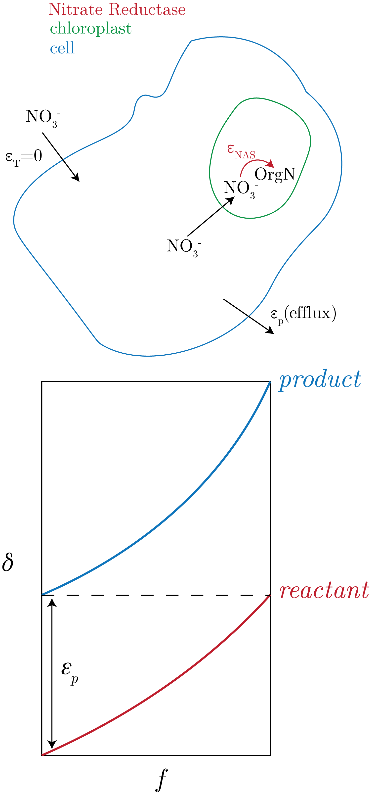
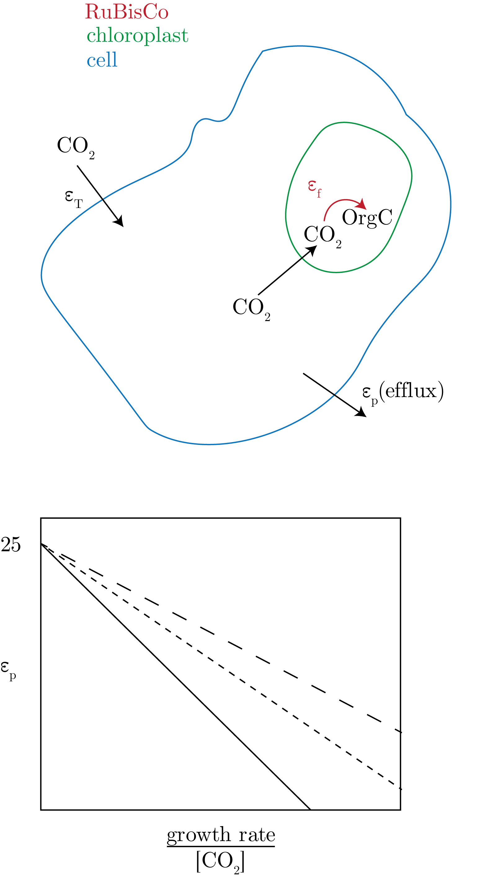
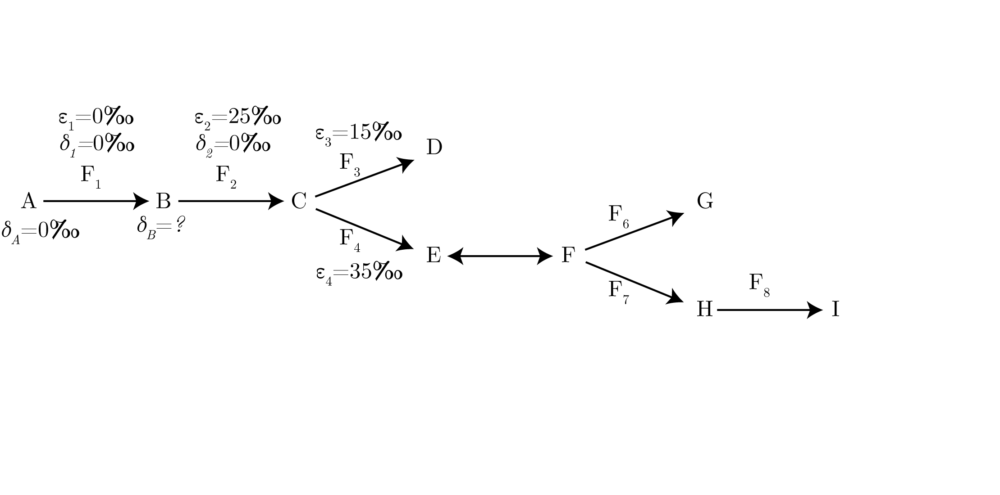
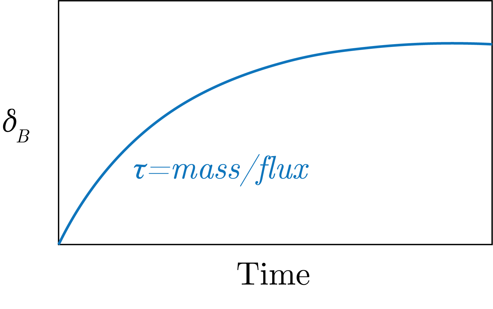
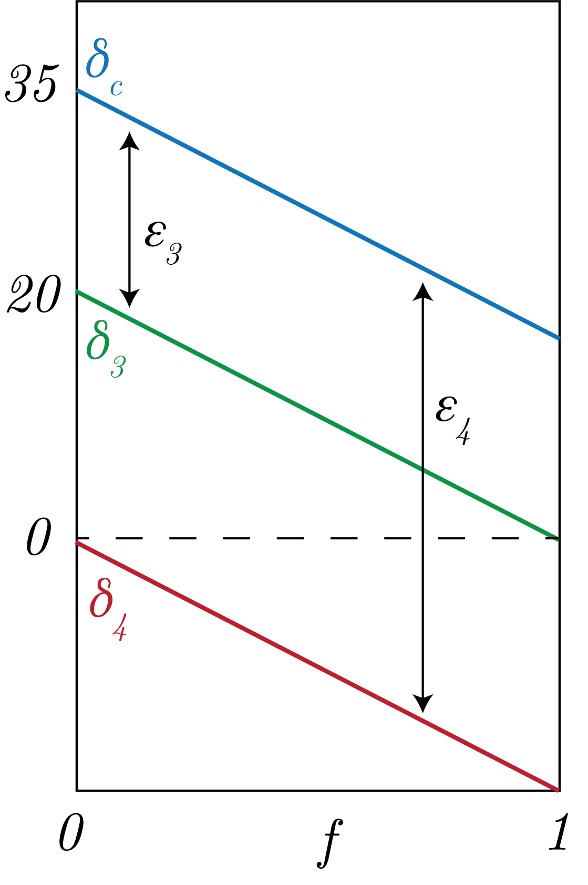

We consider the following system:
\begin{equation}
A + B = C,
\end{equation}
where we have that $A$ and $B$ are mixed to make $C$.
We have then that mixing dynamics use the following equation, following mass balance for moles $M_i$:
\begin{equation}
M_C \delta_C = M_A \delta_A + M_B \delta_B.
\end{equation}
Therefore, we get that for $f$ the fraction:
\begin{equation}
\delta_C = f_A \delta_A + (1-f_A) \delta_B.
\end{equation}
An important concept is that in this kind of mixing, we have that mixing is not linear, this is to say that this is not conservative.
We can make a "Keeling Plot", in which we plot $1 / M_i$, in which we case we have linear mixing.
An example of this is plotted in Fig. 1 below.
Fig. 1: Mixing of two different states that follow a nonlinear (nonconservative) mixing pattern and land on a known isotope fractionation effect ($\epsilon$ value).
A Mixing Example
Case I
We consider two states. The first state is $\left[\text{NO}_2^-\right] = 40 \: \left[\mu\text{M}\right]$ with a $\delta^{15}$ = 5 [‰].
The second state is denitrified water, for which we remember that $\epsilon_{DNF} = 25$ [‰], of $\left[\text{NO}_2^-\right] = 10 \: \left[\mu\text{M}\right]$.
Using our open, irreversible system equations, for $f=\frac{10}{40}$, we get:
\begin{equation}
\delta^{15}\text{N} = \delta^{15}\text{N}_0 - \log\left[f\right]\epsilon_{DNF} \simeq 39.7 \: \left[‰\right].
\end{equation}
Then, we apply out mixing equation to get:
\begin{equation}
\delta_{mix} = \frac{(20\cdot 5) + (10 \cdot 39.7)}{(40 + 10) / 2} \simeq 23.9 \: [‰].
\end{equation}
Case II
We have the same setup but with the denitrification drawdown to $4 \: \left[\mu\text{M}\right]$. This then gives $\delta^{15}\text{N} \simeq 62.5$ [‰] and a $\delta_{mix} = 20.5$ [‰].
Therefore, we see that the levers can really matter, i.e., you can change both the concentration as well as the isotope values, which can have counteracting effects.
-Similation
We consider the following system:
\begin{equation}
A \to \text{System} \to B.
\end{equation}
Here, we have the following definitions:
Assimilatory: $A$ (i.e., biomass)
Dissimilatory: $B$ (i.e., energy conservation turning one substance into another)
In a closed study of cells described by the top panel of Fig. 2, we want to compare the intracellular and extracellular nitrate.
They were limited by different nitrients, such as Fe such that they would consume all of the nitrate.
The results are presented in the bottom panel of Fig. 2 and summarized below:
Low Fe, Low T: small $\epsilon_p$, large difference between $\delta^{15}$N in the cell and outside the cell.
This is to say that the $\text{efflux} / \text{uptake} \ll 1$.
Low light: large $\epsilon_p$, small difference between internal and external pools.

Fig. 2: Experimental setup and results from nitrate cell experiments.
We consider another setup, presented in Fig. 3, where we have a similar experiment but with CO$_2$, in which the rate limiting step is the CO$_2 \to $ OrgC, which has a signatude of $\delta^{13}$C.

Fig. 3: CO$_2$ experiment in cell showing isotope effect. The lines in the lower panel are for different species of cells.
The model to describe this is, for $\mu$ the growth rate:
\begin{equation}
\epsilon_p = \epsilon_T - (\epsilon_f - \epsilon_T)\left[\frac{K_1}{K_2} - \frac{\mu}{K_2\left[\text{CO}_2\right]}\right].
\end{equation}
We note that $K_1 / K_2 \sim 1$ and that as $\mu \to 0$, that $\epsilon_p \to \epsilon_f$ as [CO$_2$] $\to \infty$ all determined by the RuBisCo.
This is called the Passive Diffusion Model.
It has been updated to include the co-uptake of bicarbonate into the cell, at which RuBisCo is the most down-stream enzyme acting on the system.
Biosynthesis
We assume a system in steady state (SS) as shown in Fig. 4 below.

Fig. 4: Steady state biosynthetic test case that we are considering.
We first want to, given the conditions given in the figure, determine what $\delta_B$ is. To do this, we note that SS means $\delta_1 = \delta_2$.
Therefore, we get that:
\begin{equation}
\delta_2 = \delta_B - \epsilon_2,
\end{equation}
which means that $\delta_B = 25$ [‰].
We know this as what goes in, $\delta_B$, must equal what does out, $\delta_2$, offset by the isotope effect, $\epsilon_2$, so we can equibilently write this as:
\begin{equation}
\text{[IN]} \: \delta_B = \delta_2 + \epsilon_2 \: \text{[OUT]}.
\end{equation}
Here we note that the time to reach steady state, $\tau$, is proportional to the size of your isotope pool over the flux of that pool, as presented in Fig. 5.

Fig. 5: A schematic showing the approach to steady state.
How, we want to know what happens at Point C in Fig. 4. Again, as we are at steady state, we know that:
\begin{equation}
F_2 = F_3 + F_4,
\end{equation}
which then means that:
\begin{equation}
\delta_2F_2 = \delta_3F_3 + \delta_4F_4.
\end{equation}
Now we can change this into $f_3 = F_3 / \left( F_3 + F_4 \right) $ notation to get the mixing equation:
\begin{equation}
\delta_2 = f_3\delta_3 + (1-f_3)\delta_4.
\end{equation}
We can think og this as in Fig. 6.

Fig. 6: How to think about the branching equation above.